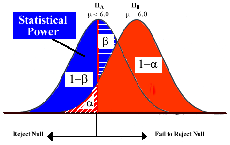
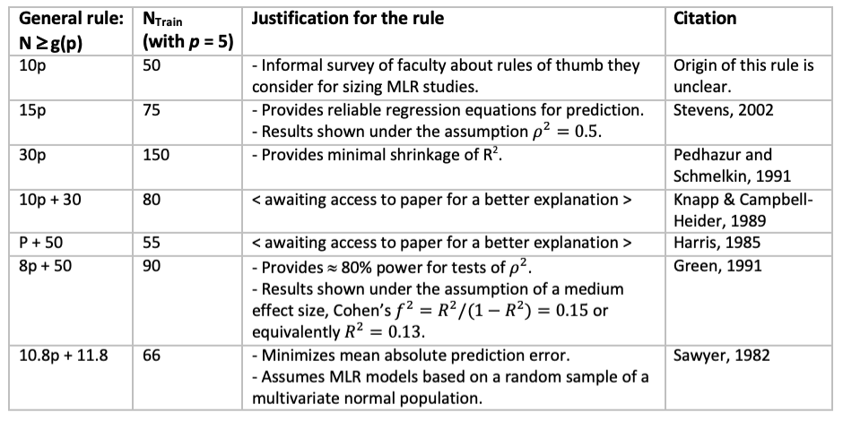
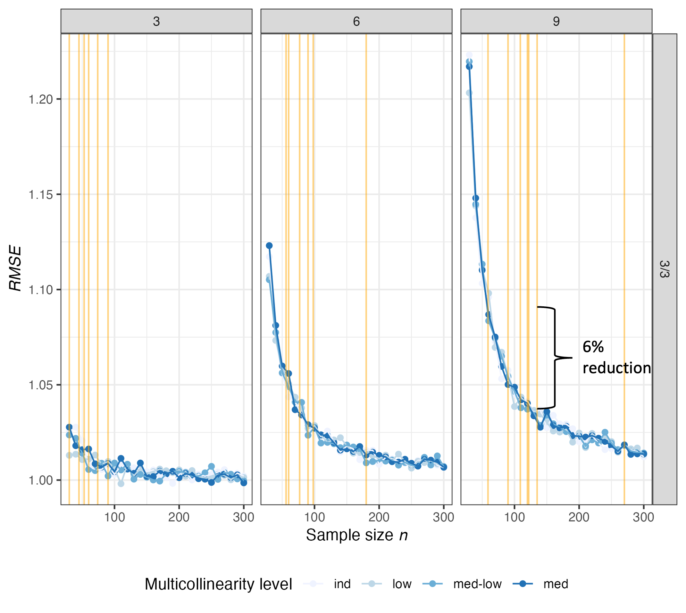
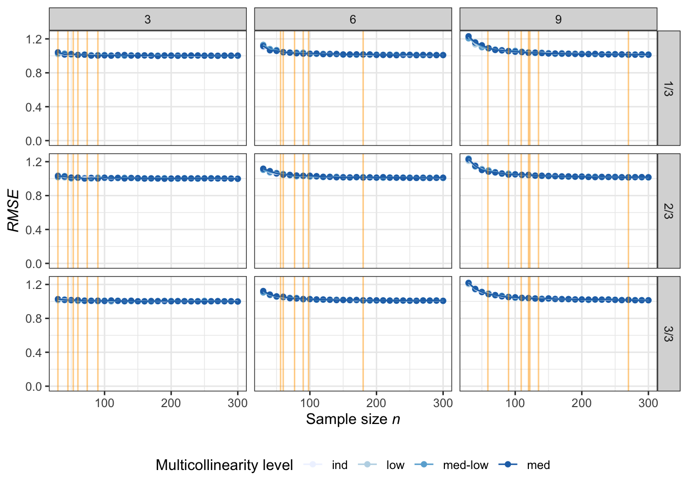
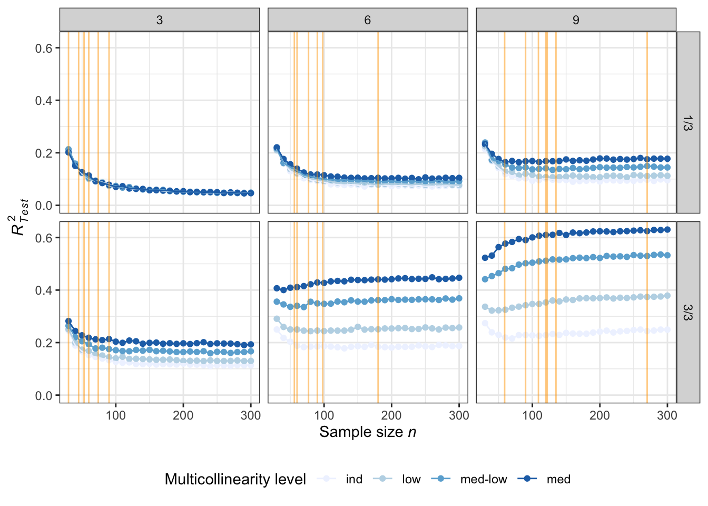

Sample size rules of thumb for out-of-sample prediction quality in multiple regression
2024-01-18
When planning a study, determining how large a sample is needed is an important step.
\(n\) too large \(\rightarrow\) waste of resources,
\(n\) too small \(\rightarrow\) less confident in results.
Many things to consider when choosing the sample size; it’s as simple as a large \(n\).
Statisticians know more (representative) data is better.
But this ignores other considerations, such as ethics and availability of resources.
Data collection comes at a cost, whether that be time, money or computation time.
All of these considerations are necessary, but they don’t address the statistical implications of sample size selection in terms of quality of the results.
Currently.
Growing emphasis in prediction and data science.
Regression is the first quantitative method introduced in “An Introduction to Statistical Learning with applications in R” (James et al. 2021). It serves as the foundation for many other methods.
Techniques such as cross-validation are already frequently used to assess prediction quality and select models.
Future?
Can the sample size rules of thumb suggested for sizing studies for hypothesis testing also be used to help size a study for prediction?
This is the main goal of this research.
Researchers often use sample size calculations related to a power analysis as guidelines for sizing their studies.
Another popular type of recommendations for sample size comes from conventional rules of thumb (RoT).
Formal sample size calculations are performed using an appropriate distribution, such as the non-central t or F distributions.
Theoretical results for the minimum sample size \(n\) that achieves some power can be found for the simplest case: \(H_0: \beta_1 = 0\) vs \(H_1: \beta_1 \ne 0\).
Probability calculations involve a non-centrality parameter (ncp) \(\lambda\), which represents the effect size.

Hard to generalize to \(p\) predictors.
It is easy to think about effect size for single predictor, but harder for \(p\) predictors.
Explicit solutions become very hard, if not impossible to obtain.
Why is effect size so important?
So, researchers often search for other ways to help size their study.
Less developed in literature.
Consistent general findings.
\(N_{\text{prediction}} \gg N_{\text{power}}\) (Maxwell 2000).
Adequate power \(\nRightarrow\) generalizability.
Population model similarity
Knofczynski and Mundfrom (2007) provided guidelines for \(N\)s that yield “sample regression models that predict similarly to the population regression model”.
“Similar” was defined as a strong enough correlation between \(\hat{Y}_{\text{pop}} = X \beta\) and \(\hat{Y}_{\text{sample}} = X \hat{\beta}\) (i.e. \(r\) > 0.92 or 0.98) .
Results showed that populations with smaller correlations between the \(Y\) and \(\mathbf{X}\) requires larger sample sizes for good predictions.
The PEAR method
Barcikowski and Brooks (2012) proposed the Precision Efficacy Analysis for Regression (PEAR) method.
Primary goal was to make sure that sample regression models are generalizable to future samples.
Strategy was to limit the amount of cross-validity shrinkage \(\epsilon = R^2 - R_C^2\) by .
The goal of this paper is to study sample size recommendations for prediction in MLR.
This is investigated using a simulation experiment where 5-fold cross validation was implemented to measure the out-of-sample prediction performance of models based on various sample sizes.
This strategy more closely resembles what is done in practice, where a single sample needs to be used for both training and testing, rather than two distinct samples.
Models were fit in the context of observational studies.

Three population characteristics were manipulated to cover a wide range of validating scenarios.
The total number of predictors \(p = 3, 6, 9\).
The proportion of active predictors relative to \(p\), so-called \(q\)-ratio = 1/3, 2/3 and 3/3.
The degree of multicollinearity between the \(X\)s. Without loss of generality, correlation matrices were used when specifying the variance-covariance parameter \(\Sigma_X\) of the multivariate normal distribution used to generate the design matrix. The levels were defined as follows: \(\rho_{XX} \sim \text{Uniform}\) with the corresponding bounds (ind = 0, low = \((0, 0,2]\), medium-low = \([0.2, 0.4]\), medium = \([0.4, 0.6]\)).
In total, all possible combinations of the sample sizes, number of predictors, number of active predictors, and degree of multicollinearity defined a set of 36 unique validation scenarios for each sample size \(n\) (\((p \times q\text{-ratio} \times \rho_{XX}) = (3 \times 3 \times 4) = 36\)).
\[Y_i = \beta_1 X_1 + \cdots + \beta_p X_p + \epsilon_i \qquad(1)\]
where \(X \sim \text{MVN}_p(\mu_X = \boldsymbol{0}, \rho_{XX})\), \(\beta_j = 0.2\) (\(j = 1, \ldots, q\)) remaining \(\beta_j = 0\) (\(j = q+1, \ldots, p\)), and \(\epsilon_i \overset{iid}\sim \text{N}(0, \sigma^2 = 1)\).
During the cross-validation procedure, each model was trained, and predictions were made on the holdout set of observations.
Two measures were used:
\[\text{RMSE} = \bigg[\frac{1}{n_{\text{test}}} \sum^{n_{\text{test}}}_{i = 1} (y_{\text{new, }i} - \hat{y}_{\text{new, }i})^2\bigg]^{1/2} \qquad(2)\]
\[R^2_{\text{test}} = \text{Cor}(y_{\text{new}}, \hat{y}_{\text{new}})^2 \qquad(3)\]
Below are the steps used to conduct the Monte Carlo simulation within R; this outlined procedure was performed for each iteration of the simulation (in total, 500 iterations were run for each scenario).
Step 1) Get sample of data.
For a particular number of predictors \(p\) and level of multicollinearity, generate the correlation matrix.
Once a proper matrix is obtained, simulate \(n\) observations for \(X\) utilizing \(\rho_{XX}\).
Set coefficients for \(q\) active predictors to a constant, arbitrarily chosen value of \(\beta_j = 0.2, \hspace{10pt} j = 1, \dots, q\) and non active predictor coefficients to zero \(\beta_j = 0, \hspace{10pt} j = q + 1, \dots, p\). Then simulate the response variable \(Y\) for each of the \(n\) observations according to the population model in Equation 1.
Step 2) Perform 5-fold cross validation.
Partition sample data from step 1 into 5 groups (aka folds).
Fit a sample MLR model using only data from four of the folds (e.g. folds 1 - 4).
Using the regression equation from the above model, obtain the predicted values for observations in the fold that was held out (in this example, fold 5).
Calculate the two accuracy measures described in Equation 2 and Equation 3.
Repeat steps b - d until each fold has been used as the testing set exactly once.
Average the accuracy measures over the 5 folds.
Step 3) Go through each scenario.
Once the entire simulation procedure was complete (steps 1 – 3, for each iteration), accuracy measures were summarized over the 500 iterations, within each unique scenario.
### ---- Setup simulation structure ----
# NOTE: demo is for only 2 iterations and fewer sample sizes
# initialize simulation settings with repeated iterations
params_i <- expand.grid(n = seq(from = 30, to = 60, by = 10),
p = c(3, 6, 9),
q_ratio = c("1/3", "2/3", "3/3"),
mc = c("ind", "low", "med-low", "med"),
i = 1:2) %>%
data.frame %>%
group_by(n, p, q_ratio, mc) %>%
mutate(sim_id = cur_group_id()) %>%
ungroup %>%
arrange(sim_id, i)
# calculate specifics and organize
params_i %<>% mutate(
q = case_when(
q_ratio == "1/3" ~ p/3,
q_ratio == "2/3" ~ 2*p/3,
q_ratio == "3/3" ~ p
),
mc = as.character(mc) # needed for match.args()
) %>%
select(sim_id, i, n, p, q_ratio, q, mc)
params_i %>% head(n = 10) %>% kable| sim_id | i | n | p | q_ratio | q | mc |
|---|---|---|---|---|---|---|
| 1 | 1 | 30 | 3 | 1/3 | 1 | ind |
| 1 | 2 | 30 | 3 | 1/3 | 1 | ind |
| 2 | 1 | 30 | 3 | 1/3 | 1 | low |
| 2 | 2 | 30 | 3 | 1/3 | 1 | low |
| 3 | 1 | 30 | 3 | 1/3 | 1 | med-low |
| 3 | 2 | 30 | 3 | 1/3 | 1 | med-low |
| 4 | 1 | 30 | 3 | 1/3 | 1 | med |
| 4 | 2 | 30 | 3 | 1/3 | 1 | med |
| 5 | 1 | 30 | 3 | 2/3 | 2 | ind |
| 5 | 2 | 30 | 3 | 2/3 | 2 | ind |
# A tibble: 10 × 3
sim_id i params
<int> <int> <list>
1 1 1 <tibble [1 × 5]>
2 1 2 <tibble [1 × 5]>
3 2 1 <tibble [1 × 5]>
4 2 2 <tibble [1 × 5]>
5 3 1 <tibble [1 × 5]>
6 3 2 <tibble [1 × 5]>
7 4 1 <tibble [1 × 5]>
8 4 2 <tibble [1 × 5]>
9 5 1 <tibble [1 × 5]>
10 5 2 <tibble [1 × 5]>### ---- Generate and split data ----
# generate data according to each simulation setting
# -> specify constant values in simulation (non-variable settings)
simulation$data <- simulation$params %>% map(function(params) {
params %$% make_sim_data(n, p, q, mc, b = 0.2, sigma = 1)
})
# split each dataset into 5 folds
simulation$kfolds <- simulation$data %>%
map(\(df) rsample::vfold_cv(df, v = 5, repeats = 1))
simulation %>% head(n = 10)# A tibble: 10 × 5
sim_id i params data kfolds
<int> <int> <list> <list> <list>
1 1 1 <tibble [1 × 5]> <df [30 × 4]> <vfold [5 × 2]>
2 1 2 <tibble [1 × 5]> <df [30 × 4]> <vfold [5 × 2]>
3 2 1 <tibble [1 × 5]> <df [30 × 4]> <vfold [5 × 2]>
4 2 2 <tibble [1 × 5]> <df [30 × 4]> <vfold [5 × 2]>
5 3 1 <tibble [1 × 5]> <df [30 × 4]> <vfold [5 × 2]>
6 3 2 <tibble [1 × 5]> <df [30 × 4]> <vfold [5 × 2]>
7 4 1 <tibble [1 × 5]> <df [30 × 4]> <vfold [5 × 2]>
8 4 2 <tibble [1 × 5]> <df [30 × 4]> <vfold [5 × 2]>
9 5 1 <tibble [1 × 5]> <df [30 × 4]> <vfold [5 × 2]>
10 5 2 <tibble [1 × 5]> <df [30 × 4]> <vfold [5 × 2]>[[1]]
y x1 x2 x3
1 1.771636995 -0.60060948 1.004117234 1.1208559
2 1.080453589 1.71742037 -0.498604680 1.9034893
3 -0.439603041 -0.67233611 0.368570145 -0.5941547
4 0.012531691 -0.10818769 -0.511318724 2.7467608
5 0.188503610 1.94410911 0.272513817 0.3915868
6 -1.117744663 0.56343057 -1.898344974 0.1837951
7 -1.328565849 -2.08427794 -1.736415768 0.9266671
8 -1.398029137 -0.16058698 -0.793035317 -0.2868051
9 0.076994923 2.39230824 0.148995799 0.2913957
10 0.461136795 0.73760257 -0.120516712 -0.1986517
11 2.033517703 -0.89680980 -0.560080455 0.8549133
12 0.002691725 -0.39707402 0.054257879 1.2541894
13 -2.099940124 -0.50749101 -0.122068368 -0.1773304
14 -2.221569145 -0.55517093 0.479765918 0.2649020
15 -0.156567166 -0.03130252 -1.190362666 -0.7060817
16 -0.365173193 -0.03435185 0.684009707 -1.8611297
17 0.470720205 0.15144015 1.197999735 0.4211744
18 0.006665128 0.28500269 0.404945130 -1.6929284
19 -1.591879652 -0.20989675 0.617194212 0.9271298
20 1.553430189 1.78255998 1.271476806 -1.5711735
21 -0.483769486 -0.39100938 -0.753245352 1.4633528
22 0.950644258 -0.65759382 0.064148074 -1.7498320
23 0.780485941 0.44532326 0.054012595 -1.4049745
24 0.922943305 -0.40154305 0.267704964 -1.4543827
25 -2.001831575 0.99452248 0.724806462 -1.6002685
26 -1.416187969 0.09130585 0.582921699 0.9069383
27 -0.112318771 -0.81289658 0.621212873 0.9641083
28 -1.451495765 -0.93329195 1.894197660 -0.1530169
29 0.651787866 -0.21593334 -0.002806907 -0.1714670
30 0.692157328 -1.22314311 -0.680957836 0.7658491### ---- Run simulation ----
# loop through each iteration to work on each set of kfolds
for (j in 1:nrow(simulation)) {
# extract resample dataframe
kfolds = simulation[j, "kfolds"]$kfolds[[1]]
# fit models for k-fold cross-validation with UDF
preds = kfolds$splits %>% map(\(split) holdout_results(split, formula(y ~ -1 + .)))
# calculate predictions for each fold
results = preds %>% map(function(df) {
data.frame(rmse = yardstick::rmse_vec(truth = df$y,estimate = df$`.fitted`),
rsq = yardstick::rsq_vec(truth = df$y, estimate = df$`.fitted`))
})
# summarize cross-validation results
simulation[j, "results_cv"] <- nest(
results %>%
bind_rows %>%
summarize(across(everything(), mean))
)
}
simulation %>% select(-c(params, data, kfolds)) %>% head(n = 10)# A tibble: 10 × 3
sim_id i results_cv
<int> <int> <list>
1 1 1 <tibble [1 × 2]>
2 1 2 <tibble [1 × 2]>
3 2 1 <tibble [1 × 2]>
4 2 2 <tibble [1 × 2]>
5 3 1 <tibble [1 × 2]>
6 3 2 <tibble [1 × 2]>
7 4 1 <tibble [1 × 2]>
8 4 2 <tibble [1 × 2]>
9 5 1 <tibble [1 × 2]>
10 5 2 <tibble [1 × 2]>### ---- Summarize results ----
# create results dataframe
results <- simulation %>%
select(sim_id, i, params, results_cv) %>%
unnest(cols = c(params, results_cv)) %>%
summarize(.by = c(sim_id, n, p, q_ratio, q, mc),
across(c(rmse, rsq), list(mean = mean, sd = sd)))
results %>% head(n = 10) %>% kable| sim_id | n | p | q_ratio | q | mc | rmse_mean | rmse_sd | rsq_mean | rsq_sd |
|---|---|---|---|---|---|---|---|---|---|
| 1 | 30 | 3 | 1/3 | 1 | ind | 1.2723011 | 0.0220986 | 0.3219901 | 0.1179472 |
| 2 | 30 | 3 | 1/3 | 1 | low | 1.0658717 | 0.1771781 | 0.1402697 | 0.0570686 |
| 3 | 30 | 3 | 1/3 | 1 | med-low | 1.0987802 | 0.0500894 | 0.0950452 | 0.0904093 |
| 4 | 30 | 3 | 1/3 | 1 | med | 1.0251562 | 0.0442562 | 0.2526409 | 0.1271945 |
| 5 | 30 | 3 | 2/3 | 2 | ind | 0.9245151 | 0.0276761 | 0.3211919 | 0.0492861 |
| 6 | 30 | 3 | 2/3 | 2 | low | 1.0543937 | 0.0370452 | 0.1983855 | 0.0587175 |
| 7 | 30 | 3 | 2/3 | 2 | med-low | 0.9107743 | 0.0572674 | 0.1667520 | 0.0004747 |
| 8 | 30 | 3 | 2/3 | 2 | med | 0.9841009 | 0.1470488 | 0.1157385 | 0.0558235 |
| 9 | 30 | 3 | 3/3 | 3 | ind | 0.9790815 | 0.2312043 | 0.2728615 | 0.1983251 |
| 10 | 30 | 3 | 3/3 | 3 | low | 1.0005123 | 0.2141873 | 0.2040428 | 0.1522665 |
RMSE

RMSE

\(R^2_{\text{Test}}\)

Overall, when quantifying quality of predictions with \(RMSE\), results showed only small changes when increasing the sample size from 30 to 300.
Based on the implemented scenarios of this simulation, larger sample sizes did not see enough of a benefit in accuracy (i.e. smaller \(RMSE\)) to warrant the large increases in \(n\).
Lastly, due to the suspicious pattern, nothing can be gleaned from the results when using out-of-sample \(R^2\) as the measure of predictive accuracy.